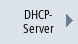

Um die Inbetriebnahme effektiver zu gestalten, drücken Sie den Softkey "Diagnose Netzwerk", um die Daten und Verfügbarkeit jedes Netzwerkteilnehmers am Ethernet einfach darzustellen. Die Ergebnisanzeige dieses Scanvorgangs liefert u. a. folgende Informationen:
Damit haben Sie die Möglichkeit zu testen, ob die aktuelle Topologie mit der Solltopologie übereinstimmt.
Vorgehensweise
| | 1. | Wählen Sie den Bedienbereich "Diagnose" an. |
 | 2. | Drücken Sie die Menüfortschalt-Taste und den Softkey "Bus TCP/IP". |
| | | |
| | 3. | Drücken Sie den Softkey "TCP/IP Diagnose". Das Fenster "TCP/IP Diagnose " wird geöffnet und zeigt die aktuelle Verfügbarkeit der Netzwerkverbindungen an. |
 | 4. | Drücken Sie den Softkey "Diagnose Netzwerk", um Ihre Netze zu durchsuchen. Das Fenster "Netz-Status" wird geöffnet und zeigt die Adressen für Anlagennetz HMI (X120), Anlagennetz PN (X150) und Firmennetz (X130). Für nicht erreichbare Netzwerke bleiben die entsprechenden Felder im Fenster leer. |
| | 5. | Drücken Sie den Softkey "Neu anzeigen", um die Anzeige zu aktualisieren. |
| | | - ODER - |
|  | | Drücken Sie den Softkey "DHCP-Server", um Informationen und den Status der DHCP-Server abzufragen. Das Fenster "DHCP-Server" wird geöffnet. Für jeden aktiven DHCP-Server wird im oberen Teil des Fensters tabellarisch der Status, die Rolle (Priorität), die MAC-Adresse, die TCU-Version und die Lease-Version angezeigt. Im unteren Teil des Fensters steht die Wunsch-IP mit dazugehörigem Adressbereich. Davon abweichende Daten werden rot dargestellt. |
| | 6. | Drücken Sie den Softkey "Adressliste", um alle Informationen des aktiven DHCP-Servers abzufragen. Das Fenster "Adress-Liste" wird geöffnet. Für jeden Teilnehmer wird tabellarisch die IP-Adresse, die Client-ID in Form der MAC-Adresse oder CF-Kartennummer, die Lease-Version, die Gerätenummer, der DNS-Name und zusätzliche Informationen angezeigt. Inaktive Teilnehmer werden grau dargestellt. |